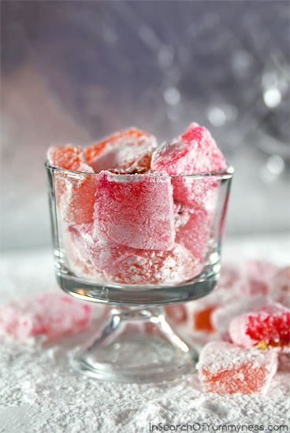

Turkish delight

These are Turkish Delight candies inspired by The Chronicles of Narnia.Get the recipe for Orange Pine Nut turkish delight below
Ingredients
- grapeseed oil, , for greasing
- 28 gram gelatin
- 260 millilitres water
- 450 gram icing sugar
- 4 teaspoon orange extract, , or to taste
- orange food colouring, , optional
- 1 teaspoon orange zest
- 2 tablespoon pine nuts, , toasted and crushed
For dusting
- ¼ cup icing sugar
- ⅛ cup cornstarch
Steps
- Lightly grease a medium loaf pan (8 ½ x 4 ½ x 2 ½) with the oil.
- Mix the gelatin, water and extract in a medium pot. Add the icing sugar and whisk vigorously.
- Cook the mixture over medium heat, whisking continuously until the sugar and gelatin has completely dissolved.
- Then bring the mixture to a boil. Once the mixture is bubbling, reduce the heat and simmer for 20 minutes. Avoid stirring the pot from this point.
- After about 20 minutes the mixture should become thick and syrupy. Remove the pot from heat and add a few drops of food colouring, stirring until the colour is even.
- Stir in the chopped nuts (and zest, if using), and then leave the mixture to cool for a couple of minutes.
- Pour the mixture into the loaf pan, cover with a dishcloth, and leave it to set at room temperature for 24 hours.
- Mix the cornstarch and icing sugar together well and sift to remove any lumps. Set this dusting mixture aside for later.
- Once the Turkish Delight has set, use a butter knife to score around the edges of the pan. Carefully pull the candy out of the pan with your hands and turn it out onto a flat surface that has been sprinkled with some of the cornstarch and icing sugar mixture.
- Use a sharp knife to cut the Turkish Delight into squares, wiping the blade as needed with a damp cloth.
- Roll your Turkish Delight blocks in the dusting mixture until well coated, then store in an airtight container.